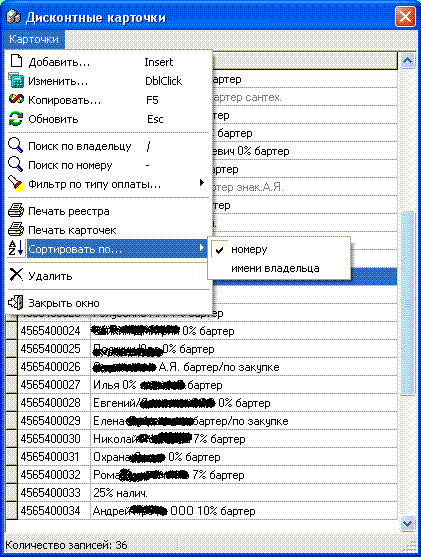

- В ПО "SuperMarket" может быть организована
дисконтная система со скидками по пластиковым карточкам. Данный справочник
обеспечивает работу с ними (см. также раздел "Настройки программы" подраздел
"Скидки и Скидки 2").
- 
 Примечание:
при использовании не карточной скидки, а простой скидки от суммы или при
совместном использовании этих двух систем, все продажи с "бескарточными"
скидками относятся на карточку №1.
Примечание:
при использовании не карточной скидки, а простой скидки от суммы или при
совместном использовании этих двух систем, все продажи с "бескарточными"
скидками относятся на карточку №1.